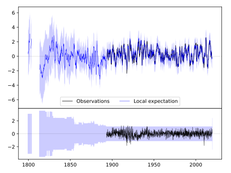
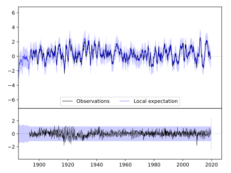
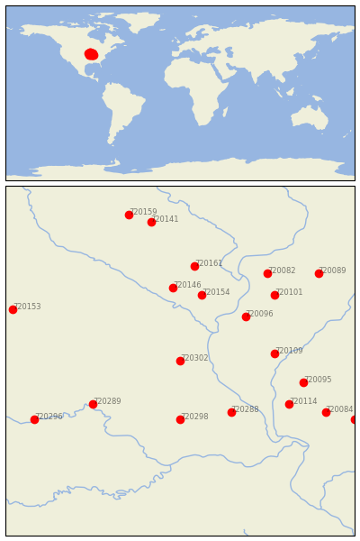

STEFFENVILLE [USA]


| Neighbour | Name | Country | Distance | Lon/Lat | Years |
|---|
| 720302 | STEFFENVILLE | USA | 2 | -91.9, 40.0 | 1893-2019 |
| 720298 | MEXICO | USA | 88 | -91.9, 39.2 | 1892-2019 |
| 720288 | BOWLING GREEN 1 E | USA | 98 | -91.2, 39.3 | 1883-2019 |
| 720096 | LA HARPE | USA | 101 | -91.0, 40.6 | 1893-2019 |
| 720154 | MT PLEASANT 1 SSW | USA | 103 | -91.6, 40.9 | 1863-2019 |
| 720109 | RUSHVILLE | USA | 111 | -90.6, 40.1 | 1889-2019 |
| 720146 | FAIRFIELD | USA | 111 | -92.0, 41.0 | 1855-2019 |
| 720289 | BRUNSWICK | USA | 122 | -93.1, 39.4 | 1889-2019 |
| 720114 | WHITE HALL 1 E | USA | 144 | -90.4, 39.4 | 1854-2019 |
| 720161 | WASHINGTON | USA | 145 | -91.7, 41.3 | 1875-2019 |
| 720101 | MONMOUTH | USA | 148 | -90.6, 40.9 | 1881-2019 |
| 720095 | JACKSONVILLE 2E | USA | 148 | -90.2, 39.7 | 1858-2019 |
| 720082 | ALEDO | USA | 167 | -90.7, 41.2 | 1879-2019 |
| 720084 | CARLINVILLE | USA | 188 | -89.9, 39.3 | 1891-2019 |
| 720296 | LEXINGTON 3E | USA | 193 | -93.9, 39.2 | 1878-2019 |
| 720089 | GALVA | USA | 208 | -90.0, 41.2 | 1862-2019 |
| 720153 | MT AYR | USA | 209 | -94.2, 40.7 | 1892-2019 |
| 720141 | BELLE PLAINE | USA | 213 | -92.3, 41.9 | 1889-2019 |
| 720093 | HILLSBORO | USA | 224 | -89.5, 39.2 | 1893-2019 |
| 720159 | TOLEDO 3N | USA | 230 | -92.6, 42.0 | 1893-2019 |